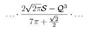
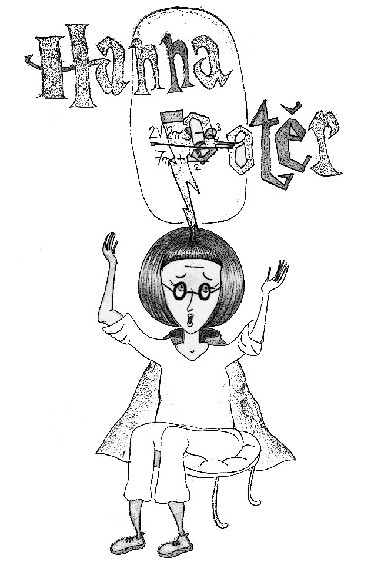
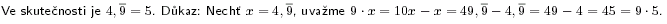

« předchozí článek | obsah čísla | následující článek »
matematická parodie na Harryho Pottera a Kámen mudrců
Před domem číslo 4 se setmělo. Jako každý večer, ale tento večer byl jiný. U plotu se sousedy se odkudsi zjevil starý, štíhlý muž s dlouhými, stříbrnými vousy. Na sobě měl splývavý fialový hábit a v náručí nesl dítě. Naproti mu přišla žena, maskovaná škraboškou kočky.
„Necháme ji zde, u její tety a strýce,“ prohlásil muž.
„Je to opravdu moudré?“ pochybovala žena. „Jsou to muflové. Neznají hodnotu pí ani na jedno desetinné místo!“
Byli to ale jeho jediní příbuzní, takže neměli na výběr. Žena se ještě na dítě se zájmem zahleděla, prohlásila, že „její sláva hvězd se bude dotýkat,“ a odstrčila mu z čela ofinu, která zakrývala mateřské znaménko ve tvaru zlomkové čáry. Byla to Hana Potěr, dcera čísel.
Hanin strýc Vermont vstal brzy ráno. Pečlivě se oholil. Nesnášel vousy, měl sedm elektrických holících strojků, a stejně se nakonec ještě oholil břitvou. Když cestou z domu zakopl o košík s dítětem, chvíli zuřil a nadával, ale pak nechal dítě i s košíkem a průvodním dopisem své manželce Pamele, která zůstávala v domácnosti, a odešel do práce.
A tak Hana Potěr vyrůstala u tety a strýce. Vyrostla z ní hezká, černovlasá holčička s pečlivě upraveným mikádem a okrouhlými brýlemi. Často se musela dohadovat s jejich vlastním synem Dudlíkem, který neuměl napočítat ani do šesti (doslova). Když se s ním jednou hádala o to, kdo z nich sní poslední borůvkový knedlík, hlavou jí bleskla myšlenka a navrhla rozdělit knedlík na poloviny – pět desetin ať sní ona a zbytek Dudlík. To tetu rozrušilo a strýce dopálilo. „Žádný desetinný čísla neexistujou!“ zavřískal Vermont. Od té doby často Hanu napomínal, „ať už přestane s těmi nesmysly“ a teta jí vyčítala, „proč musí být taková divná, proč není jako ostatní děti,“ a říkala, že si tím zkazí celý život, když bude taková. Hana však přesto věděla, že to, co vidí, je skutečné a že necelá čísla existují.
„Jak víš, že všichni matematici mají vousy?“ zeptala se jednou Hana Dudlíka.
„To ví přece každej,“ odpověděl.
„Ty jsi nějakého viděl na vlastní oči?“ podivila se Hana.
„Ne,“ řekl Dudlík. „ale nejsem blbej.“
Když bylo Haně deset let, přišel do domu číslo 4 dopis. Jako skoro každý den, ale tento dopis byl jiný. Byl adresován přímo Haně Potěr a zpáteční adresa zněla: „Vousy 0,13“. „Nějaký pošuk,“ pomyslel si Vermont a dopis spálil. V den Haniných 11. narozenin v 11 hodin, 11 minut a 11 sekund přesně však zazvonil zvonek a na neočekávanou návštěvu přišel neobyčejně velký člověk s plnovousem, kterého ještě neviděli. Bez dovolení se usadil na pohovce, představil se jako Hybrid a prohlásil, že Hana je rozený matematik a bude studovat na Matematické akademii ve Vousech.
„To mi narostou vousy?“ řekla Hana potichu a stydlivě. Její otázka však zanikla v hlasitých protestech strýce Vermonta.
„Naučí se tam algebře a geometrii,“ trval na svém Hybrid. „Bude ji učit ten nejlepší matematik všech dob, profesor Bumbal.“
„Já svoji schovanku žádnýmu vousatýmu úchylovi nedám!“ zavřískal Vermont.
„Nikdo přede mnou nebude urážet profesora Bumbala,“ řekl přísně Hybrid. „Kolik máte prstů na pravé ruce?“
Vermont se podíval na svoji pravou ruku. „Pět,“ odpověděl.
„Máte jich tam čtyři celé devět periodicky,“ řekl Hybrid.
Vermont a Pamela se dali do zděšeného křiku. „Pomoc, mně zmizel prst!“ křičel Vermont.
Hanu to pobavilo, na rozdíl od nich totiž uměla správně zaokrouhlovat.dukaz Odešla s Hybridem a do začátku akademického roku žila s ním.
Následující den se vydali nakoupit školní potřeby. Věděla, že jako matematik je jiná a bude mít jiné potřeby než její matematikou nenadaní vrstevníci, ale takové logaritmické pravítko ji vskutku šokovalo.
Po cestě Hybridovi vypadl jakýsi papír. Hana mu ho podala a on se zhrozil a papír schoval.
„Co to bylo?“ zeptala se zvědavě Hana.
„Zpráva z výpočetního střediska, pro Bumbala, moc tajná, nikomu to neříkej,“ vysoukal ze sebe Hybrid nervozně. Evidentně měl z něčeho strach.
Hana ho nechtěla dál znervozňovat, a tak změnila téma. „Hybride, ty víš, co je s mými rodiči?“
„Jo,“ řekl Hybrid. „To ví každej. Teda, až na tebe.“
„A co s nimi je?“ zeptala se Hana.
„Vynásobil je Ty-víš-kdo,“ řekl Hybrid.
„Co je to za paradox?“ podivila se Hana.
„To se tak říká. Prostě se nepočítá s tím, že by ji někdo neznal.“ řekl Hybrid.
„Proč? Ona nemá jméno?“ řekla Hana.
„Má jméno, ale matematici se ho styděj říkat. Bojí se,“ řekl Hybrid.
„Ale ty mi ho řekneš, viď,“ řekla nevinně Hana Potěr.
„Tak jo,“ řekl Hybrid. „Byla to... nula.“
„Moje rodiče vynásobila nula?“ řekla Hana.
„Neříkej to tak nahlas,“ napomenul ji Hybrid. „A když oba pohltila, pokusila se vynásobit tebe.“
„Mně?“ podivila se Hana Potěr.
„Ano, a nikdo nechápe, proč se jí to nepodařilo. Teda, profesor Bumbal si myslí, že je to tím, že nejseš číslo; množina všech čísel totiž není uzavřená vůči operaci plození dětí,“ vysvětloval Hybrid, „ale s jistotou to nikdo neví a bylo předpovězeno, že tento rok se vrátí, a proto tě na akademii potřebujou.“
Hana Potěr netušila, co by mohla udělat, aby se nula nevrátila a nenásobila další nevinná čísla, ale byla odhodlaná udělat, co bude moci.
Když měla Hana Potěr vyrazit do školy, řekl Hybrid, že má nějaké tajné povinnosti, a poslal ji na nádraží samotnou, jen s jízdenkou. Vlak měl odjíždět z nástupiště číslo 9,75. Hana se zeptala výpravčí, kde je najde, ale ta si jen zaťukala na čelo. Hana si uvědomila, že výpravčí je mufla a muflové znají jen celá čísla, musela je tedy najít sama. Naštěstí důvtipně prohledala prostor mezi nástupišti číslo 9 a 10 a hledané nástupiště i s přistaveným expresem našla.
Cestou, když vlak projížděl po sinusoidách, přisedl k ní mladý kluk. „Jmenuji se Roman W, ale kamarádi mi říkají Róm,“ představil se. Krátce se také seznámili s jednou dívkou Hanina věku, Hieronymou G.
Když vlak dorazil do Vousů, pršelo a všichni doufali, že přeběhnou přímo do školy. Před vchodem ale horlivé studenty zastavil profesor Bumbal, ten starý, vousatý muž ve fialovém hábitu, a vysvětlil jim, že než je pustí dovnitř, musí si každý z nich nasadit modrý klobouk, a podle toho, jak mu padne, bude zařazen do jedné ze čtyř vouseckých ubytoven – 0,2; 0,4; 0,6 nebo 0,8.
„Proč jsem si jen nevzala pláštěnku?“ pomyslela si Hana, nahlas však řekla: „Ach, ta byrokracie!“
Hana, Róm a Hieronyma měli to štěstí, že nejen skončili všichni tři v ubytovně 0,2, ale dokonce byli zařazeni do stejného pokoje.
„To budu spát s klukem? Není to divné?“ pošeptala Hana Hieronymě.
„Víš, to někdy holky dělají, nemyslíš?“ odpověděla.
„To ano, ale až jsou větší,“ poznamenala jedenáctiletá Hana.
Promočení spolužáci měli ohromnou radost ze školních uniforem, přestože jim vůbec neslušely. Podstatné bylo, že byly suché a pohodlné, ze stoprocentní bavlny.
Sotva se zabydleli na ubytovnách, čekala je inaugurační hostina. V aule, zatímco jedli, jim profesor Bumbal napsal na tabuli dlouhou a složitou rovnici s mnoha proměnnými a prohlásil, že tato rovnice je bude doprovázet celý akademický rok. Už jen pohled na ni působil Haně Potěr bolest hlavy, zvlášť tato část:

Samolibě působící kaligrafické provedení S jí bylo vskutku odporné, přestože Rómovi a Hieronymě žádné problémy nedělalo. Bude za tím nula, řekla si a byla si tím ještě jistější, když profesor Bumbal kostrbatě poznamenal: „Strach a neznámo jsou totiž naše největší hrozby a kdo Tu, jíž nesmíme dělit, odhalí, bude před ní v bezpečí.“ Hana Potěr se rozhodla rovnici vyčíslit, aby nulu včas odhalila, než vynásobí další čísla. Sama by to nezvládla, ale Róm a Hieronyma jí pomohli.
Trvalo měsíce, než se jim to podařilo. Museli kvůli tomu nad rámec studijního plánu prostudovat mnoho knih, některé z polic s omezeným přístupem; když se je Hana a Hieronyma snažily získat, budilo to v knihovně pozdvižení. (Police s omezeným přístupem říkaly policím, které byly tak vysoko, že do nich nedosáhly, pokud nešplhaly po skříních nebo jedna druhé nestouply na ramena. Brzy ale zjistily, že to budou muset dělat, když se nikdo jiný nedívá.)
Hana a Hieronyma pilně počítaly, Róm je zatím psychicky podporoval z pohovky; počítat se mu nechtělo, prý měl čísel z vyučování plné zuby.
Mezivýsledky vypadaly slibně, a když už se rok chýlil ke konci, obě strany rovnice byly dopočítány, ale očekávaný výsledek nevyšel. Hana si byla jistá, že někde udělali chybu. Šla s jejich řešením za profesorem Bumbalem, ale ten byl právě na služební cestě, a tak se kamarádi vydali obejít zbytek profesorského sboru. Přes mnohé výhrady a po zdlouhavém naléhání jim nakonec profesorka McGoogleová ukázala zprávu, kterou Hana přečetla Rómovi a Hieronymě: „Vážený profesore Bumbale, s potěšením vám oznamujeme, že náš superpočítač NX-1990 po deseti letech provozu vyčíslil kořen zadané rovnice s přesností na sto desetinných míst. Kořen rovnice je...“ zarazila se Hana Potěr. „Nula? Ale vždyť tu jsme tam dosazovali,“ řekla a znovu prolétla pohledem celou zprávu. Všimla si, že nula nebyla dosazena za S, ale za Q. Uvědomila si, že to Q jí působilo ty bolesti hlavy a právě je nula využila ke svému prospěchu.
Když se profesor Bumbal vrátil ze služební cesty, Hana mu ukázala jejich výsledky a on ji pochválil, že se dobře učí. Ale najít důkaz, který by zabránil nule, aby se vrátila, se kamarádům nepodařilo. A s tímto výsledkem usedla Hana Potěr do vlaku a odjížděla na prázdniny k tetě Pamele a strýci Vermontovi.
« předchozí článek | obsah čísla | následující článek »
[dukaz] :  ↩